{% include google_analytics.ssi %}Local-scale snow accumulation variability on the Greenland ice sheet from ground-penetrating radar (GPR)
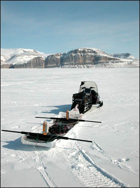
Ground-penetrating radar (GPR) pulled on a sled by snowmobile
on the Greenland ice sheet. Photo: Konrad Steffen.John Maurer
{% include address.ssi %}
This paper was written for my Masters thesis in the Department of Geography at the University of Colorado at Boulder. My thesis committee consisted of my thesis advisor, Dr. Konrad Steffen (Geography Professor, CIRES Director), Dr. Ted Scambos (NSIDC Lead Scientist), and Ken Knowles (NSIDC Lead Scientific Programmer).
March, 2006
Measurements of snow accumulation are critical to studies of mass balance. Traditional point measurement techniques (snow pits, manual probes, firn and ice cores) are limited in space and often do not represent the region surrounding them due to spatial variability that is caused by a variety of factors, including surface slope and deposition and erosion by wind. Current accumulation maps of Greenland are based on point measurements and have estimated errors of 20-25% (Bales et al. 2001; Ohmura and Reeh 1991). Ground-penetrating radar (GPR) has the potential to significantly improve upon these accumulation estimates because of its ability to cover large regions over short time periods with relative ease at high vertical (depth) and horizontal (areal) resolutions. The current study employs GPR data to investigate the distribution and variability of accumulation at shallow depths (~5 m) and at the local scale (100-m by 100-m) at two locations on the Greenland ice sheet (Tunu-N and NASA-U). Beyond providing a better understanding of local-scale snow accumulation patterns on the Greenland ice sheet, the results that will be discussed also have potential implications for the interpretation and selection of ice cores as well as for space-borne remote sensing techniques aimed at deriving snow water equivalent (SWE) from passive-microwave and/or scatterometry.
Introduction • Methods • Results • Discussion • References
Appendix A. Data Processing Instructions • Appendix B. Program Documentation and Installation InstructionsClick here for a printer-friendly PDF version of this site (3.6 MB).
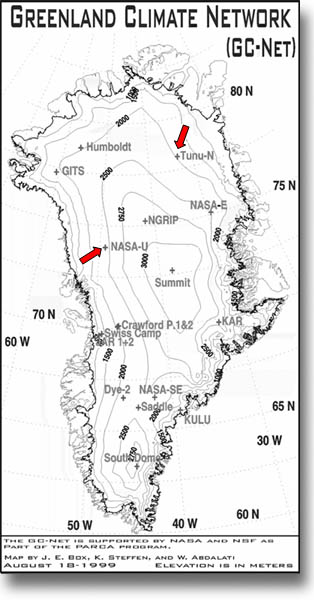
Figure 1. Map of the Greenland Climate Network (GC-Net), with Tunu-N (northeast) and NASA-U (west-central) labeled. 1.1. Current Knowledge About Accumulation on Greenland
1.2. Cryospheric Applications of GPR
1.3. The Physical Basis of GPR
1.4. Project SignificanceDue to the technical and physical difficulties involved, it is not known yet whether the Greenland ice sheet is shrinking or growing. Net losses of ice mass, potentially associated with climate change, are important to monitor because of the commensurate rises in sea level, as well as freshening of the North Atlantic, which could slow or halt ocean currents that transport heat to the north. Containing 8% of all of the Earth’s fresh water, the Greenland ice sheet has the potential to raise the global mean sea level by about seven meters if it were to melt. There is evidence that Greenland significantly melted during the most recent interglacial (Cuffey and Marshall, 2000) and may therefore be a primary contributor to sea level rise in the event of continued global warming. This would be catastrophic for many coastal regions across the planet (Small and Nicholls, 2003; Nicholls, 2002), inciting large migrations of environmental refugees. On the other hand, a warmer atmosphere could contain more water vapor, which may potentially lead to increased snow accumulation and growth of the ice sheet (Zwally, 1989). Shutting down or significantly weakening North Atlantic currents, furthermore, could abruptly halt heat transport to the Arctic and incite another glacial period (Schwartz and Randall, 2003). For all of these reasons, it is important to monitor Greenland’s mass balance, or changes to its total volume of snow and ice.
Mass balance of the Greenland ice sheet can be estimated by measuring volume inputs (snow accumulation) and subtracting volume losses (melting, iceberg calving, and sublimation), by measuring changes in ice sheet height using altimetry and correcting for isostatic uplift and losses due to calving and basal melt of floating ice tongues (see ICESat), or by measuring changes in the gravity field above Greenland and correcting for isostatic uplift (see GRACE). Accurately measuring accumulation is critical to the first method. Current estimates of snow accumulation on Greenland, however, have large errors (20-25%) because they are derived from a relatively sparse network of point measurements from snow pits, firn or ice cores, and manual probing (Ohmura and Reeh, 1991; Bales et al., 2001). Ground-penetrating radar (GPR), also referred to as radio echo sounding (RES) when used at lower frequencies (< 10 MHz), has the potential to significantly improve upon these accumulation estimates because of its ability to cover large regions over short time periods with relative ease at high vertical (depth) and horizontal (areal) resolutions. This coverage is useful to help characterize the spatial variability and distribution of accumulation.
A total of 20 automatic weather stations (AWS) have been installed across Greenland since 1995 (Steffen and Box, 2001), known as the Greenland Climate Network (GC-Net), as part of NASA’s Program for Arctic Regional Climate Assessment (PARCA). The primary objective of this research has been to process and analyze GPR data collected near two of these AWSs to analyze the variability and spatial distribution of snow accumulation at the local scale (< 100 m). On May 31 and June 1, 2003, Dr. Konrad Steffen and his graduate student, Russell Huff, collected 100-m by 100-m GPR survey grids in the accumulation zone of Greenland near two PARCA automatic weather stations: respectively, Tunu-N in the northeast (78°01'01" N, 33°58'54" W; 2113 m a.s.l.) and NASA-U in west-central Greenland (73°50'29" N, 49°30'14" W; 2369 m a.s.l.) (Figure 1).
In this introduction I will review current knowledge about accumulation on the Greenland ice sheet as well as previously published cryospheric applications of GPR, focusing on those investigating snow accumulation. A more theoretical review of the physics behind GPR over snow and ice follows, with emphasis on some of the difficulties encountered when analyzing GPR data.
1.1. Current Knowledge About Accumulation on Greenland
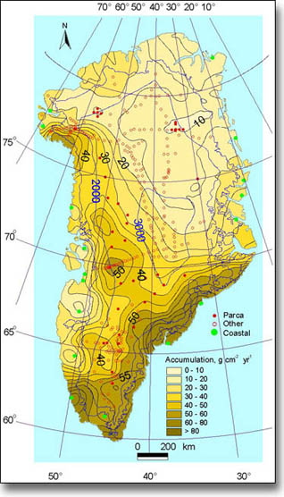
Figure 2. Map of observed mean annual accumulation on the Greenland ice sheet from a collection of 256 snow pits and ice cores and 17 coastal meteorological stations from the period 1913-1999 (Bales et al., 2001) reprinted from the Journal of Geophysical Research with permission of the American Geophysical Union. Average accumulation for the entire ice sheet is ~30 g·cm-2·yr-1 (300 mm·yr-1). Current estimates of snow accumulation on Greenland have large errors (20-25%) because they are derived from a relatively sparse network of point measurements from snow pits, firn or ice cores, and manual probing. These measurements are sparse both temporally and spatially due to the difficulty of collecting measurements in the harsh environment of the Greenland ice sheet and because they are manually intensive to acquire. The most recent compilations of existing accumulation measurements are Ohmura and Reeh (1991) and Bales et al. (2001). In total, the number of point locations included in these compilations are 251 and 256, respectively, spread over more than three-quarters of a century from 1913 to 1999.
The mean accumulation maps derived in these two sources agree to within 3% of their total accumulation average for the entire ice sheet (31 g·cm-2·yr-1 vs. 30 g·cm-2·yr-1) but have large regional differences due to differing interpolation techniques (hand-contouring in Ohmura and Reeh, 1991, vs. kriging in Bales et al., 2001) and data sources. Overall, the Bales et al. (2001) map (Figure 2) is an improvement on the previous Ohmura and Reeh (1991) compilation due to the addition of new, high-quality firn and ice cores from NASA’s PARCA initiative and their filtering out of erroneous, short (single-year), and/or closely spaced records. There are relatively few data records below 1800 m elevation or in northeastern, southeastern, far northern, or east-central Greenland.
Primary sources for spatial distribution of accumulation on the ice sheet include topography and wind/atmospheric circulation patterns (Ohmura and Reeh, 1991; van der Veen et al., 2001). The greatest accumulation on the ice sheet occurs in the southeast due to cyclonic activity generated by the Icelandic low in winter, while the least accumulation occurs in the northeast due to the precipitation shadow that is caused by a topographic barrier preventing flows from both the southeast and the west. The west coast of Greenland experiences moderate accumulation from a wet continental air mass in the summer but is mostly dry in the winter except for stray cyclones entering Baffin Bay through Davis Strait from the Atlantic. Meanwhile, the northwest gets moderate-to-low levels of precipitation resulting from polar lows in the summer only.
Based on the available measurements in the Bales et al. (2001) compilation, the mean uncertainty (standard deviation) in accumulation on the Greenland ice sheet is 24% (7 g·cm-2·yr-1) and ranges between 15-30% (4.5-9 g·cm-2·yr-1). In his effort to produce formal error bars for Greenland’s existing accumulation maps, Cogley (2004) notes the need to double our current accuracy in accumulation in order to achieve a corresponding ±1 mm·yr-1 accuracy in sea level rise with 95% confidence. He concludes that this can be achieved through measurement of the winter balance in the ablation zone of Greenland, where measurements are currently extremely sparse, and through concerted efforts involving airborne and spaceborne remote sensing techniques. High-resolution airborne radar surveys seem like a promising avenue for accomplishing this in the relatively near future (Kanagaratnam et al., 2001). It is important to note, however, that uncertainty in the accumulation is only part of the problem regarding accuracy of Greeland’s mass balance, and that the amount of iceberg calving from the ice sheet may have an even larger uncertainty at this time.
Mosley-Thompson et al. (2001) point out that any single point measurement of accumulation contains both a climate signal (i.e. accumulation due to climate in that specific location) and local glaciological “noise” such as topography (e.g. small-scale sastrugi vs. large-scale shifting dunes) or redeposition and sublimation of snow due to wind. In order to derive the climate signal, one must first correct for local glaciological noise by using time-averaging within a point measurement (i.e. depth-averaging) and/or spatial-averaging across several closely-spaced point measurements. How much averaging that is required for any particular location, however, (i.e. how many years or points you must average across to separate out the climate signal from the noise) is dependent on the degree to which local glaciological noise impacts the snow accumulation at a given location.
Quantifying glaciological noise at the local scale at two locations in Greenland is the objective of this thesis. Mosley-Thompson et al. (2001) drives home the point for why this is an important endeavor: so that we can get a better measurement of actual climate variability. Though closely-spaced cores have been compared for accumulation variability on the Greenland ice sheet (e.g. Humbolt > 20% within 25 km (Mosley-Thompson et al., 2001)), smaller-scale variability has not been previously studied for the Greenland ice sheet. Such an assessment can best be accomplished with GPR due to its continuous areal coverage.
Besides point measurements, other tools have also been used to measure accumulation on the Greenland ice sheet, including remote sensing, meteorological models, and GCMs. Drinkwater et al. (2001) use scatterometry measurements from Seasat, ERS-1/2, NASA scatterometer (NSCAT), and QuikSCAT to empirically relate the backscatter coefficient to accumulation in the dry snow zone of Greenland; similarly, Nghiem et al. (2005) use QuikSCAT to derive accumulation in the percolation zone of Greenland. As previously mentioned, high-resolution airborne radar also shows promise in mapping accumulation over the entire ice sheet (Kanagaratnam et al., 2004). Meteorological models have been used to employ ECMWF re-analysis data (ERA-40) for the analysis of ice sheet-wide mass balance and accumulation patterns for the period 1958-2003 (Hanna et al., 2005). GCMs do not yet accurately reproduce mean accumulation on Greenland, consistently underestimating this value. Nevertheless, ECHAM4 and Genesis-2 have been used to predict a ~30% increase in accumulation for Greenland in a double-C02 climate due to increased moisture in the atmosphere and northward displacement of the Icelandic low, which brings precipitation to southeastern Greenland (Wild and Ohmura, 2000; Thompson and Pollard, 1997). The magnitude of such predictions justifies the need for a better understanding of accumulation changes in Greenland, to which the current study hopes to contribute.
1.2. Cryospheric Applications of GPR
Since the first surface-based radar soundings of ice in 1964 (Walford, 1964), glaciological applications of GPR have included measurements of glacier or ice sheet thickness (e.g. Welch et al., 1998), basal conditions (e.g. Winebrenner et al., 2003), liquid water content (e.g. Arcone, 1996; Albert et al., 1999; Pettersson et al., 2004), and internal structure (e.g. Pälli et al, 2003), including crevasse and buried debris detection for the purposes of construction (e.g. Delaney and Arcone, 1995; Delaney et al., 1999). In the category of internal structure, GPR surveys have been successfully conducted to identify isochronous reflection horizons for correlating between disparate ice cores in order to better calibrate their time-depth relationships (e.g. Eisen et al., 2003a). Internal reflection horizons have also been used to infer glacial dynamics (e.g. Vaughan et al., 1999) and, more relevant to the current study, patterns of snow accumulation over time and space. Other cryospheric applications of GPR include mapping of permafrost extent and depth (e.g. Wu et al., 2005; Judge et al., 1991) as well as measurements of snow depth and snow water equivalent (SWE) in alpine mountain catchments (e.g. Marchand et al., 2001; Marchand and Killingveit, 2004) and validation of spaceborne radar data (e.g. Engeset and Ødegård, 1999).
To date, there have been several published studies using GPR to measure snow accumulation distribution and variability. These have focused on glaciers and ice caps on Svalbard and on a few locations on the Antarctic ice sheet, which I will briefly review here. Though there have been numerous airborne radar studies of the Greenland ice sheet, no GPR studies conducted on Greenland appear in the scientific literature.
Svalbard:
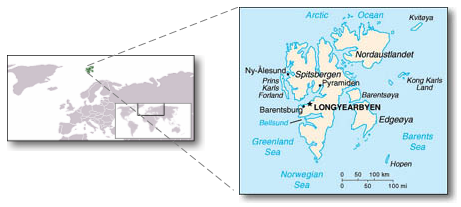
Sources: Wikipedia (left) and CIA World Factbook (right).Winther et al. (1998) conducted three GPR transects ranging in length from approximately 100-200 km on Spitsbergen, Svalbard in May, 1997 at 450 & 500 MHz. The previous year’s snow accumulation was mapped, using manual probing and snow pit stratigraphy for validation, and converted to snow water equivalent using representative in situ measurements of density. They found that accumulation increases significantly with elevation, is 38-49% higher in the east than the west, 40-55% higher in the south than the north, and occurs at a minimum in central and northern locations.
Pinglot et al. (2001) similarly mapped the previous year’s snow accumulation on the Austfonna ice cap on the nearby island of Nordaustlandet, Svalbard in 1998/1999 at 500 MHz measured across seven separate 300-km transects. As Winther et al. (1998) found on Spitsbergen, Pinglot et al. find that accumulation increases with elevation and is higher on the eastern coast compared with the west. Of particular interest was their finding that SWE is highly variable over both short (50-100 m) and long (1-10 km) distances, with up to 25% variability in the accumulation zone of the ice cap, presumably due to wind scouring and redeposition of snow. The authors conclude that individual measurements (cores and pits) are therefore not a reliable estimator of average accumulation rates.
Pälli et al. (2002) limited their GPR survey to Nordenskjöldbreen glacier on Spitsbergen, Svalbard in May, 1999 over a single 11.4 km transect. Using a much lower frequency of 50 MHz to achieve greater penetration depths, the authors use data from three existing ice cores along the transect to accurately date two accumulation layers identified in the GPR data at depths of roughly 10 m (1986) and 20 m (1963). They then use the GPR data to measure and compare snow accumulation rates between three time periods, finding an average annual accumulation rate for 1986-1999 that is 12% higher than for the period 1963-1986. Of interest to my study is that they also found high spatial variability (40-60%) in snow accumulation over short distances (100 m) along their transect, which they attribute, in part, to changes in basal topography beneath the glacier (i.e. increased ice thickness within bedrock depressions).
Lastly, Sand et al. (2003) acquired 13 transects on Spitsbergen and Nordaustlandet, Svalbard during 1997-1999 at 450 & 500 MHz, ranging in length from approximately 100-200 km at four different latitudes. Methodology and results were similar to Winther et al. (1998) and Pinglot et al. (2001) for mapping the previous year’s snow accumulation. The authors also note that accumulation varies considerably on the Austfonna ice cap over relatively short distances (a factor of four within a few tens of kilometers) due to topography.
Antarctica:
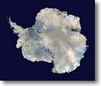
Source: NASA Blue MarbleRichardson et al. (1997) use frequency-modulated continuous wave (FMCW) GPR at a center frequency of 1550 MHz and a bandwidth of 800-2300 MHz to measure accumulation variability on Dronning Maud Land, East Antarctica during the austral summer of 1993/1994. Penetrating 12 m below the surface, their 1040 km transect extended from the ice shelf of the Antarctic coast at Neumayer station inland to the polar plateau. The authors find that accumulation is highly variable over short and regional distances: over a distance of < 5 km, accumulation varied by as much as ± 60-70% from the local average value. Areas with large surface slopes reached standard deviations of 59% from the spatial average accumulation, while smoother areas on the higher-altitude plateau had standard deviations reaching 22%. The authors conclude that wind redistribution due to topographic features may have a major influence on the observed variability and that because of the large magnitude of variability in the region, point measurements are insufficient for characterizing accumulation.
Richardson and Holmlund (1999) similarly measure accumulation variability at Dronning Maud Land, East Antarctica, in 1996/1997, using 800-2300 MHz FMCW. They conducted a 500-km traverse on the polar plateau along a path of 11 existing firn cores. The GPR transect shows that the firn cores are generally representative of the mean accumulation rate of the surrounding region, but can be off by as much as 22%, indicating the importance of incorporating GPR for the validation and interpretation of firn and ice cores. The GPR data also show standard deviations in depth of accumulation layers ranging from 3-35%, with less variability (< 10 %) at higher elevations on the plateau where the surface relief is much smoother. The authors also conducted a more detailed GPR survey (700-1100 MHz, 15 km x 20 km) surrounding a deeper core (100 m) nearer the coast. For this study, they found that the spatial variability in accumulation was 21% and that the core underestimates the mean accumulation rate for the survey grid area by 10% (Figure 3).
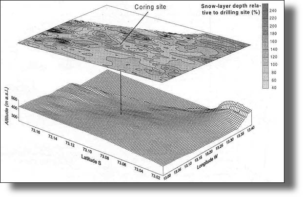
Figure 3. Example of local-scale snow accumulation variability mapped using GPR data, as measured in East Antarctica in 1999 (Richardson and Holmlund, 1999).Frezzotti et al. (2004) acquired a 1000+ km GPR transect extending from Terra Nova Bay to Dome C in East Antarctica during a 1998-2000 investigation. Their study shows that accumulation is homogenous at large scales (> 100's km2) but highly variable (3-47% std. dev.) at short (10's of m) and medium (km) spatial scales due mostly to wind-driven processes. They also conclude that previous compilations of surface mass balance (SMB) in the study region, which are based on point measurements, over-estimate SMB by as much as 65% due to sparse data and the unrepresentativeness of many of the collected data points as compared with their GPR results.
Lastly, King et al. (2004) collected a 100-MHz 13-km transect across the Lyddan ice rise in northwestern Antarctica (74º S, 22º W) off the coast of the Weddell Sea during 2000-2002, with a penetration depth ranging from 5-50 m. Counter to previous assumptions, they found that even gentle topography (slopes < 0.04) can be associated with large spatial variability (20-30%) in snow accumulation. Based on wind speed measurements from nearby automatic weather stations (AWS) and radiosonde measurements as well as a snow transport model using these data, they were able to attribute the observed variability in accumulation to postdepositional redistribution (i.e. sublimation and redistribution of wind-borne snow). Similar to the other publications described above, the authors therefore caution that the interpretation and location of ice cores must be done carefully to avoid wind-driven variation patterns that may mask or distort the climate-based precipitation variability derived from such data.
* * *In summary, almost all of the aforementioned GPR publications report high spatial variability in snow accumulation over both short and regional scales due to either surface and/or basal topography and the wind patterns that surface topography controls, even on surfaces with very gradual slopes. The authors therefore recommend caution in the interpretation of point measurements when used to represent average accumulation over a surrounding area. None of the studies are at the scale or location used in my thesis, which investigates sub-100-m accumulation variability at two locations on the Greenland ice sheet, so it will be interesting to find out how our results compare against these previous GPR surveys.
Other reviews of cryospheric GPR applications include Plewes and Hubbard (2001) and Gruber and Ludwig (1996). Siegert (1999) also presents a review of airborne radar surveys conducted in Antarctica that is also relevant to the current investigation.
1.3. The Physical Basis of GPR
Short, successive pulses of radar electromagnetic energy are transmitted by a GPR antenna. These radar pulses are reflected at dielectric discontinuities (Figure 4). The reflected pulses are measured by a separate receiver antenna and result in relatively high amplitude signals in the output display at the location of the discontinuity. Discontinuities in snow and ice include air-bubble related changes in density, liquid water content, chemical impurities, and crystal fabric (Pälli et al., 2002). In dry snow in the uppermost ~75 meters, changes in density have the most significant impact on the radar signal (Winther et al., 1998).
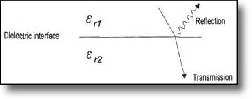
Figure 4. Radar pulses are reflected at dielectric discontinuities (Plewes and Hubbard, 2001).Depositional processes of snow accumulation create stratigraphic layers within the subsurface. Melting and refreezing of snow at the end of summer results in relatively dense layers of snow and/or hoar frost that appear in GPR data as reflection horizons (Figure 5). These layers are shaped by spatial variation in accumulation, surface slopes, and wind-induced snow deposition and erosion. The data for this project were collected over flat terrain, however, so surface slope does not play a significant role. Intrusions of refrozen melt water that exist as ice layers and ice lenses within the subsurface, prevalent in the percolation zone of Greenland, may interrupt the continuity of these stratigraphic layers and result in gaps in the GPR reflection horizons.
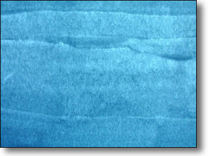
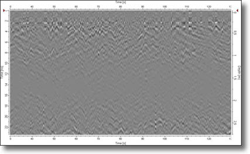
GPR instruments measure the time it takes for a pulse to travel to and from a target, referred to as its two-way travel time (TWT). In order to convert this travel time into a measurement of depth, the velocity of the radar pulse through the subsurface must be known (i.e. depth [m] = velocity [m/s] * time [s]). Velocity is a function of two electrical properties of the propagated medium: its relative dielectric permittivity (εr) and electrical conductivity (σ), collectively referred to as the "dielectric constant." A material’s dielectric permittivity measures its capacity to store an applied electric charge relative to a vacuum, thereby impeding its flow. A material with high εr, such as liquid water, absorbs an applied electromagnetic signal such as GPR such that very little signal is left to be reflected to the instrument. Electrical conductivity, on the other hand, measures the ability of a material to conduct, or carry, an applied electrical charge. A material with high σ, such as a metal, acts as a good conduit for a GPR signal, carrying most of the signal away from the instrument into the host material so that very little signal is reflected to the instrument. For these reasons, GPR requires subsurfaces with low enough εr and σ so that the signal is not completely absorbed.
The conductivity of pure snow and ice is almost zero so that velocity is primarily determined by the relative dielectric permittivity of the subsurface, which varies between ~1.0 for air and ~3-4 for ice, with intermediate values for snow and firn (i.e. compacted snow) depending on density (Plewes and Hubbard, 2001). Density profiles can be measured, then, using ice core dielectric profiling (DEP) (Eisen et al., 2003b) or traditional stratigraphic methods associated with snow pits and cores (Østrem and Bruggman, 1991) for deriving a velocity-depth function that can be applied to the GPR data for converting TWT to measurements of depth. Velocity can be empirically related to density via the permittivity of snow (Mätzler, 1996). The resulting permittivity can then be used to compute the velocity of the radar signal through the snow via the following equation:
v = c ÷ √εr
where: v = wave propagation speed,
c = speed of light in a vacuum (0.3 m/ns),
εr = relative dielectric permittivity.Once the depth of a given reflection horizon is known, accumulation above that horizon can be derived. For the purposes of our data, calibration of TWT to depth is accomplished using an average snow density measured from a snow pit at one corner of the GPR survey grid.
Advantages of using GPR include its complete areal coverage, ease of use relative to traditional point measurement techniques, and high resolution. There are also difficulties associated with using GPR, however, which I expound upon here:
* * *Antenna ringing. Horizontal banding in the resulting radargram is caused by "ringing" of the radar signal (negative and positive perturbations of signal strength) that results from interference due to radar waves that flow directly from the transmitting antenna and couple with the signal received at the receiving antenna during data acquisition (Figure 6).
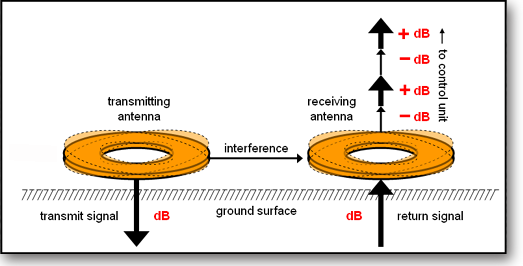
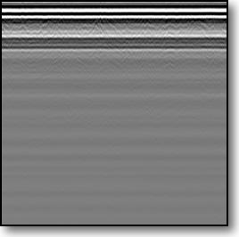
Near-field effect. GPR does not collect good data near the surface down to a depth of about 1.5 times the center wavelength (Conyers and Goodman, 1997) while the signal first penetrates the surface from the air above it and is still in the process of coupling with the subsurface medium (Figure 7).
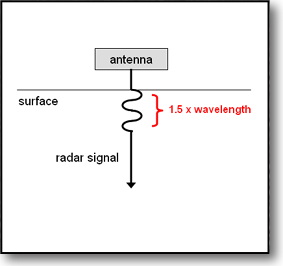
Geometrical spreading. Because of geometrical spreading, the radar signal decreases exponentially in strength with depth as 1/r2, where r is depth (Plewes and Hubbard, 2001) (Figure 8).
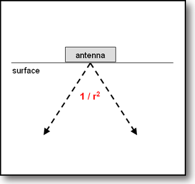
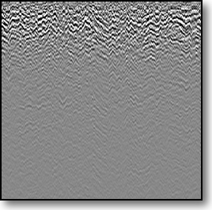
Echoes. There is often evidence of multiple reflections (i.e. echoes) from a single reflection horizon in the resulting radargram when part of the return signal continually bounces between the surface boundary and the reflection horizon (Figure 9). With each subsequent "bounce," however, the signal dissipates in energy so that subsequent echoes become increasingly faint in the resulting GPR data. The brightest return in the radargram, therefore, can be interpreted as the first reflection and the true source of the reflector in the subsurface.
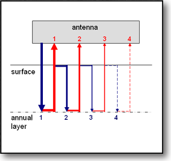
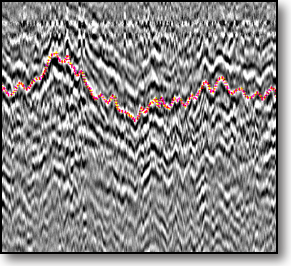
Interpretation. Because dielectric discontinuities can be due to a variety of factors, the interpretation of GPR data can sometimes be challenging, in cryospheric applications as well as in others. Reflection horizons in glacial subsurfaces can be due to accumulation layers, sporadic ice lenses from refrozen meltwater, layers of meltwater, relatively dense snow resulting from past weather events, crevasses, debris, dust layers, etc. At lower resolutions, also, the reflections that are apparent in the radargram are a combined effect of dielectric properties within the subsurface since individual layers cannot be resolved, making the data interpretation all the more complex. For these reasons, it is important to include in situ observations (e.g. snow pit stratigraphy, historical AWS measurements, manual probes, firn/ice cores, etc.) along with a GPR survey to help identify features and interpret the resulting radargram.
Resolution vs. penetration depth. Shorter wavelengths can resolve smaller features within the subsurface but dissipate more quickly with depth as they are readily absorbed by the medium. Longer wavelengths can penetrate more deeply into the subsurface but have poorer resolution in the vertical (depth) direction. As a practical sidenote, longer wavelengths also require larger antennae and more sophisticated transport mechanisms.
Resolution vs. noise. The tradeoff to good resolution is a higher incidence of noise, or a lower signal-to-noise ratio, which speckles the resulting radargram and can heavily obscure features you are trying to locate.
Correct for topography. GPR data that are not collected over flat terrain must correct for surface topography by warping the data in the vertical direction so that reflection horizons are not distorted (Figure 10). This requires the collection of accurate GPS elevation data coincident with the GPR survey.
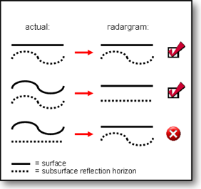
Figure 10. An illustration demonstrating the effect of topography on the resulting radargram if left uncorrected. The top two scenarios properly reproduce the shape of the subsurface reflection horizon, but the bottom scenario skews the horizon.Correct for forward velocity variations. GPR data must also be dynamically stretched or compressed in the horizontal direction after data collection to correct for any significant variation in forward velocity of the antennae during data acquisition, if any. This either requires GPS data or equidistant markings stored within the data via an attached wheel during acquisition. Because such wheels do not often operate successfully over snow and ice surfaces, the GPS method is usually used.
TWT-depth conversion. As previously mentioned, consideration and effort must be made prior to a GPR survey for calibrating the instrument’s native measurement of two-way travel-time (TWT) to a more useful measurement of depth. This can be acquired in a variety of ways, from dielectric profiling of the subsurface, to calibration against a target of known depth, to manual measurements of density in a snow pit.
* * *The GPR data processed and analyzed for this thesis exhibit a number of the difficulties mentioned above. At a frequency of 1000 MHz, our data have high enough depth resolution (~0.5 cm ) to resolve individual stratigraphic layers. On the downside, they only penetrate about five meters into the subsurface before geometrical spreading completely dissipates the signal, and they also have a relatively high incidence of speckle (noise). Antenna ringing is obvious in the horizontal banding that is present throughout the data, and the near-field effect highly distorts the imagery down to a depth of roughly 45 cm. Echoes from stratigraphic layers are numerous and can be tricky to separate visually in areas where overlap of echoes from different layers occurs. Interpretation of the subsurface features in the radargram has been aided by snow-pit stratigraphy and AWS sonic surface-height measurements. Because the surveys were conducted over flat terrain and at constant walking speed, it was unnecessary to correct for vertical or horizontal distortion within the data. Lastly, TWT-depth conversion has been made by a simple average density derived from the snow pit analysis.
In short, as I will show later, the data allow successful identification of 1-2 stratigraphic layers after processing to correct for antenna ringing, the near-field interference zone, geometrical spreading, and noise. Echoes and remaining noise make the layer identifications difficult along some areas of the survey grid but not impossible. From these layers, variability and distribution of snow accumulation have been computed for two 100-m by 100-m GPR survey grids in northeastern and west-central Greenland.
The proposed GPR study is one small piece in the larger puzzle of Greenland’s mass balance. With the potential to raise sea levels by as much as seven meters if it were to completely melt, it is imperative that Greenland’s mass balance be better understood and monitored. Though continued global warming is not expected to melt the ice sheet entirely or very quickly, Greenland’s contributions to sea level rise could still be significant. Melt can also indirectly influence ablation through basal lubrication and increased dynamic response of the ice sheet, leading to greater rates of calving (Zwally et al., 2002). Although Greenland is an order of magnitude smaller than Antarctica, it has a much greater potential for melting due to its lower latitude, and there is evidence that it has significantly melted in the past during the most recent interglacial (Cuffey and Marshall, 2000). Losses in Greenland’s mass balance could also combine with other increasing outlets of freshwater into the Artic (melting glaciers and permafrost, increased precipitation) that may eventually slow or halt the oceanic conveyor belt that transports heat to the Arctic, with the potential for abrupt climate change that could catapult the planet into another glacial period (Schwartz and Randall, 2003). Because global warming is amplified in the Arctic due to positive feedbacks associated with the high albedo of snow and ice, it is imperative that we continue to monitor and improve our understanding of Greenland’s mass balance.
2.1. Data Acquisition
2.2. Data Processing
2.3. Data AnalysisA total of 20 automatic weather stations (AWS) have been installed across Greenland since 1995 (Steffen and Box, 2001), known as the Greenland Climate Network (GC-Net), as part of NASA’s Program for Arctic Regional Climate Assessment (PARCA). On May 31 and June 1, 2003, Konrad Steffen and Russell Huff collected GPR data in the accumulation zone of Greenland near two PARCA AWSs: respectively, Tunu-N in the northeast (78°01'01"N, 33°58'54"W; 2,113 m a.s.l.) and NASA-U in west-central Greenland (73°50'29"N, 49°30'14"W; 2,369 m a.s.l.).
The Tunu-N location experiences relatively little accumulation (Ohmura and Reeh, 1991; Bales et al., 2001) or melt (Abdalati and Steffen, 2001) throughout the year, with 100-150 mm·yr-1 of snow water equivalent (SWE) accumulation on average (Bales et al., 2001). In 2002, however, Greenland experienced an anomalously large amount of surface melt that extended from the northeast coast into the region where Tunu-N is located (Steffen and Huff, 2003). This melt event, after refreezing as an ice layer in the subsurface, results in a dielectric contrast compared to the snow above and below it that appears as a distinct reflection horizon within the GPR data and will be analyzed as part of this project. The NASA-U location accumulates twice as much snow annually as Tunu-N with 200-300 mm·yr-1 SWE on average (Ohmura and Reeh, 1991; Bales et al., 2001) and regular occurrence of summer melt (Abdalati and Steffen, 2001), providing two visible reflection horizons in the collected data.
Besides refrozen melt layers and summer accumulation surfaces that appear via hoar frost, other mechanisms that can cause reflection horizons through the formation of dielectric interfaces in the subsurface are: relatively dense layers that form through wind compaction (wind crusts); percolation and refreezing of melt water as discontinuous ice layers, ice lenses, and ice pipes; layers that may have formed as the result of significant dust deposition; as well as the presence of crevasses or other empty spaces in the subsurface.
A Malå Geoscience (http://malags.com) RAMAC™ GPR instrument with a 1000-MHz antenna (the highest frequency antenna offered for the RAMAC GPR) was housed and pulled in a sled at a constant walking speed for the GPR surveys. Sixteen consecutive traces were stacked together during data acquisition to reduce noise in the horizontal (areal) direction. The instrument transmitted pulses at a rate of 24,081 MHz, collecting 1024 discrete samples per trace over a two-way time window of 42.5 ns. The data therefore have high vertical (depth) resolution of ~0.5 cm, well within the width of many stratigraphic layers. Using an average dry snow density of 0.3 g·cm-3 measured at each of the snow pits and an empirically derived relative dielectric permittivity of 1.62 (Mätzler, 1996), maximum penetration depth of the GPR signal at 1000-MHz over a 42.5 ns two-way time window was about five meters. Within these five meters, one or two stratigraphic layers can be visually identified within the data after filtering.
Non-differential GPS data were collected coincident with the GPR data. Due to the low position update rate of many GPS receivers (one measurement per second, in our case), the RAMAC acquisition software interpolates between GPS positions so that each individual GPR trace has an assigned GPS position. Though differential GPS data were also collected during the survey, the low number of available GPS satellites at the time of collection prevented improved accuracy. Though the non-differential GPS data give relatively poor estimates of surface elevation, the surface was very flat and so the elevation measurements are ignored. Accuracy in latitude and longitude, however, appears to be more than sufficient at the scale of the current study.
Surveys were conducted along 100-m by 100-m grids, with 10-m spacing between transects (Figure 11). In addition, two diagonal transects were collected, connecting opposite corners of the grid, providing overlap with other measurements to allow for subsequent validation. A shallow snow pit (2-3 meters) was dug at one corner of each grid to investigate stratigraphic layers and their depths to assist in subsequent analysis of the GPR data.
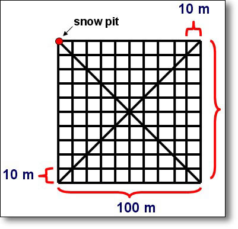
Figure 11. Survey grid used for both the Tunu-N and NASA-U GPR surveys.
- For step-by-step data processing instructions, please see the instruction manual provided in Appendix A. For a listing of the custom IDL programs written for this project, please see Appendix B, which also includes documentation and installation instructions for these programs.
Preprocessing of the resulting GPR data is necessary to produce quality images with clearly-visible reflection horizons. Malå Geoscience “GroundVision” software, used to acquire and display GPR data from the RAMAC instrument, has filtering capabilities that can dramatically improve the appearance of data when properly applied. Unfortunately, however, these filters are for display purposes only and cannot be permanently applied to the data or saved to a new output file, preventing any post-processing on the filtered data such as digitizing reflection horizons in other image-processing applications. To circumvent this limitation, we have simulated the GroundVision filters based on their description in the manual into a programming environment that allows us to save the results for subsequent processing and data analysis. This has been accomplished using Research Systems Inc.’s (RSI) (http://rsinc.com) Interactive Data Language (IDL) programming language along with RSI’s Environment for Visualizing Images (ENVI) image-processing software. A histogram-based image contrast stretch is automatically applied in ENVI to enhance details. In addition, the following IDL/ENVI software tools have been created:
- Subtract Mean Trace
Removes horizontal banding within the radargram by subtracting a calculated mean trace from all traces. A "trace" is a single, vertical column of GPR data, representing the signal "traced" by radar pulses as they travel from the instrument into the subsurface and back. Horizontal banding is caused by "ringing" of the radar signal (negative and positive perturbations of signal strength) that results from interference between the transmitting and receiving signals since some of the transmission travels straight from the transmitter to the nearby receiver antenna (i.e. the “direct wave”) (Figure 6).
- Time- (Depth-) Varying Gain
Because of geometrical spreading, the radar signal decreases in strength with depth as 1/r2, where r is depth (Plewes and Hubbard, 2001) (Figure 8). Each radar trace is multiplied by a gain function combining linear and exponential components, with coefficients set by the user, to correct for this loss of signal with depth.
- DC Removal
There is often a constant offset in the amplitude of each radar trace caused by interference from direct current (DC) used to power the GPR instrument. This filter removes the DC component from the data, which has the effect of making the data less noisy.
Because of the extremely flat surface terrain (Figure 12) and constant walking speed of the GPR survey, there was no need to also correct for vertical (topography) (Figure 10) or horizontal (areal) variations that would otherwise distort the data.
a) Tunu-N AWS, 31 May 2003:
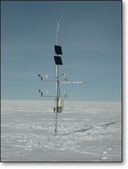
b) NASA-U AWS, 1 June 2003:
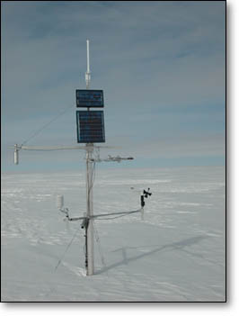
The original data file was spatially subsetted into individual 100-m or 10-m transects in order to decrease the individual file sizes to improve processing speed and filter performance. After application of the above filters, the GPR data are visually optimized for identifying reflection horizons, as shown in Figure 13 below.
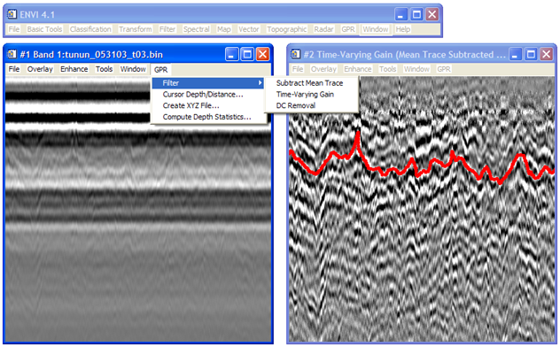
Figure 13. Screen shot in ENVI showing GPR data before (left) and after (right) application of custom-made IDL filters listed in the pull-down menu. Note the clearer reflection horizons and lack of horizontal bands (ringing) in the right image. A stratigraphic layer has been traced in the right image in red.Now that the reflection horizons can be visually identified, the next step is to digitize these reflection horizons so that the stratigraphic layers can be compiled, visualized, and analyzed. Because the reflection horizons are not continuous enough, display multiple echoes, are distorted by varying degrees of noise, and are not delineated clearly enough for automatic or semi-automatic identification, this process was done manually using ENVI’s polyline Region of Interest (ROI) tool, which allowed the layers to be traced with the mouse, capturing the location of every pixel therein for subsequent analysis (e.g. see red line in Figure 13).
After a contiguous layer had been digitized for the entire GPR survey grid, the depth and location (latitude and longitude) of each point in the layer could be extracted. Depth was computed using the two-way travel time window (i.e. the total time in nanoseconds that the instrument was set to “listen” for radar pulses during acquisition) and an estimated radar velocity (i.e. the velocity with which radar pulses traveled through the subsurface). Using an average dry snow density of 0.3 g·cm-3 measured at each of the snow pits and an empirically derived relative dielectric permittivity of 1.62 (Mätzler, 1996), radar velocity was computed to be 236 m·µs-1 according to the previously described equation:
csnow = cvacuum ÷ √ε’
where csnow is the computed radar velocity in snow, cvacuum is the speed of light in a vacuum (300 m·µs-1), and ε’ is the relative dielectric permittivity of the subsurface (snow = 1.62).
After compiling latitude, longitude, and depth for each point in a stratigraphic layer, the output was fed into Surfer software, version 8.00, by Golden Software, Inc. (http://www.goldensoftware.com) for applying kriging to grid the data and render a smooth three-dimensional surface for visualization purposes.
The first step of analysis was to validate the GPR measurements. This was accomplished in a variety of ways. Observed stratigraphy of the subsurface in a shallow snow pit at one corner of the GPR surveys is compared against depth of layers detected in the GPR data. Also, points within the GPR survey where transects overlapped (i.e. cross-points) are used to test how well measurements of depth are reproduced. Lastly, the directionality of patterns observed in the final three-dimensional visualization is compared against the predominant wind direction observed at the two sites as measured over several years by a nearby AWS.
The spatial variability in the depth of stratigraphic layers is statistically determined from the survey grid (not the kriged three-dimensional surface, since this introduces interpolation errors) using the mean and standard deviation.
Lastly, the volume of snow measured above and between the separate stratigraphic layers can be used to derive a measurement of snow accumulation in terms of its snow water equivalent (SWE). In order to do this, the mean depth (cm) of the layer is multiplied by the average snow density (0.3 g·cm-3), divided by the density of water (1 g·cm-3), and then multiplied by 10 in order to derive SWE in units of mm·yr-1.
All together, these measurements will provide an estimate as to how (un)representative a single point measurement of layer depth using traditional mass balance techniques would have been for the surveyed grids. For one such comparison at Tunu-N, the annual accumulation measured at the nearby AWS is compared against the mean of the survey grid for a corresponding year.
After filtering, only one internal reflecting horizon was clearly identifiable within the Tunu-N GPR data while two separate horizons were identifiable in the data for NASA-U. The results of applying kriging in the Surfer software package to these digitized layers for visualizing them as three-dimensional surfaces is shown in Figure 14, where latitude and longitude are displayed on the X and Y axes, respectively, and depth is shown on the vertical (Z) axis. Recall that the survey grids are 100-m by 100-m. Depth is plotted with 10x vertical exaggeration in the right-hand column to emphasize the topography of the layers, since the layers are otherwise extremely flat when plotted at true scale. These surfaces are also plotted orthogonally in the left-hand column of Figure 14 to help illustrate any spatial patterns.
a)
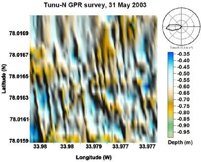
b)
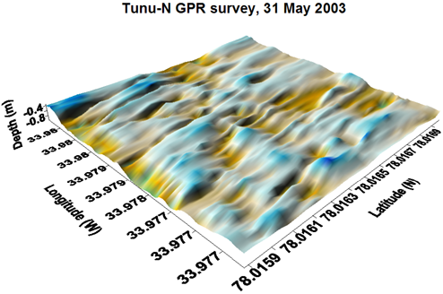
c)
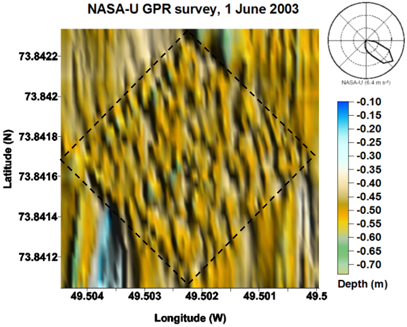
d)
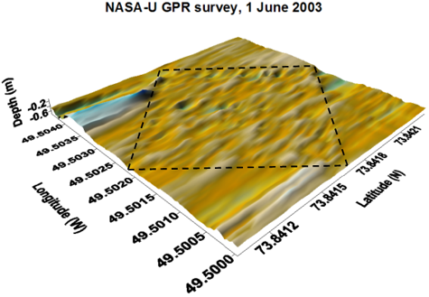
e)
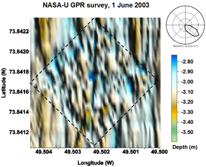
f)
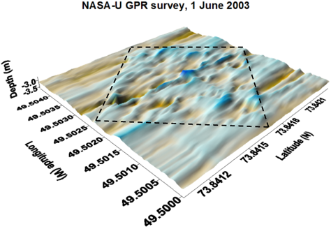
The results of the three-dimensional surfaces plotted in Figure 14 were verified using various other interpolation methods (e.g. nearest neighbor, natural neighbor, triangulation with linear interpolation, etc.), each of which produced similar results. The features of these surfaces were also preserved even after plotting the digitized layers from transects aligned in only one orientation (e.g. north-south transects vs. east-west). These methods help confirm that the patterns observed are not a relict of either the interpolation method or the orientation of transects in the survey grid.
There is a clear orientation of the surface features present in the Tunu-N layer, as can be seen in Figure 14a. The shallow dunes that this surface is composed of are aligned at an angle of roughly 170-175° with an undulation frequency of about 5-10 m. These features lie perpendicular to the predominant (1995-1999) wind direction (~265°, 5.3 m·s-1), which is portrayed in the upper-right-hand corner of Figure 14a (Steffen and Box, 2001). The nearby Tunu-N AWS anemometer data (not shown) determine that the average wind direction and speed during the formation of this layer surface (roughly 42 days between 21 July and 1 September 2001: see Figure 15) were typical (266°, 5.1 m·s-1).
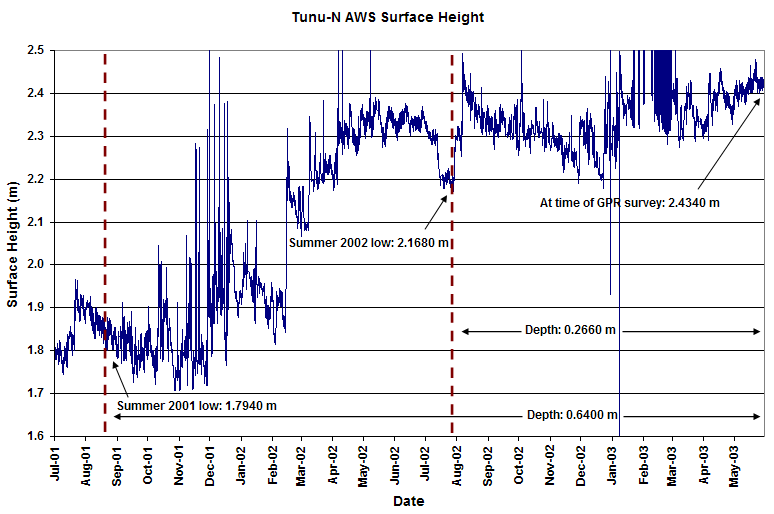
Figure 15. AWS sonic surface-height measurements from the Tunu-N GC-Net AWS between July 1, 2000 and May 31, 2003 (Steffen et al. 1996).The two reflection horizons at NASA-U, on the other hand, are more homogenous and noisy in their surface features (Figure 14c,e), especially in the upper layer (Figure 14c). It is difficult to ascertain any preferred orientation or undulation frequency of these features as a result. Several plausible reasons for this will be explained below. The predominant (1995-1999) wind direction is shown as ~130° at 6.4 m·s-1, and according to the same logic applied to the Tunu-N surface, one would expect shallow dunes to align perpendicular to this (i.e. ~220°) if they had been allowed to form properly. The NASA-U AWS anemometer data (not shown) determine that the average wind direction and speed during the formation of NASA-U layer 2 was also typical for the region (157° at 6.9 m·s-1 for layer 2; no data for layer 1).
The statistics that describe the three different reflection horizons are shown in Table 1, including their mean depths and standard deviations, as well as the total range in depth and—in cases where it was feasible—how the means compare against depths of the same layers as identified in both manual snow pit stratigraphy analysis (Figure 16) and a nearby AWS sonic surface-height instrument (Figure 15). The values used to compute these statistics are the digitized reflection horizons from each of the individual survey grid transects and not the kriged three-dimensional surfaces shown in Figure 14, so as to avoid any errors introduced by interpolation. To convert these depth values to measurements of snow water equivalent (SWE) in millimeters, the reader only need multiply the depth values by the average snow density at each of the sites (~0.3 g·cm-3), divide by the density of water (1 g·cm-3), and then multiply by 10 (to convert from cm to mm). Because the layers identified at NASA-U were determined from snow pit stratigraphy and the AWS surface height data not to correspond to annual accumulation surfaces, these GPR layers are not compared to the NASA-U AWS surface height data. Furthermore, NASA-U layer 1 occurs over a period when the AWS failed to record measurements.
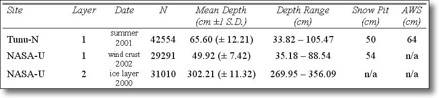
TABLE 1. Depth comparison of stratigraphic layers identified within the GPR data compared to their corresponding depths identified in a snow pit and by a nearby AWS sonic surface-height sensor, where possible. These values can be converted to SWE (mm) by multiplying by an average snow density of ~0.3 g·cm-3, dividing by the density of water (1 g·cm-3), and multipling by 10. N is the number of measurements in the GPR data included in the computations of mean depth and range.The statistics in Table 1 show that the three layers have a standard deviation of between 7.42 cm and 12.21 cm with an average standard deviation of 10.58 cm. This implies that the average local-scale spatial variability at these sites in the upper five meters is about 10 cm on average. The total range of depth values over the course of the survey, however, extends more widely between 53.36 cm and 86.14 cm with an average range of about 70 cm. Together, these statistics imply that a given point measurement of depth at these sites would be expected to be off by ±10 cm on average but could be unrepresentative by as much as ±35 cm. With a mean depth of only 65.60 cm for the reflection horizon identified at Tunu-N, this means that any given point measurement taken within the survey site (e.g. ice core, snow pit, AWS sensor, manual probe, etc.) would be in error by 15% on average or as much as 53% compared to the survey mean.
To get a sense of how accurately the layers were manually traced in ENVI, Table 2 also shows the statistics for a comparison of the depths of points that intersect within the survey grid (i.e. cross-points). Overall, the depths at these cross-over points stray on average by about 8 cm, only somewhat less than the standard deviation of depth reported in Table 1 (~10 cm on average). Unfortunately, this would suggest that the human error in identifying the layers within the GPR data is almost as great as the natural variability of the layers themselves. There are a few alternative explanations for the relatively poor agreement of these cross-over points, however, described below.
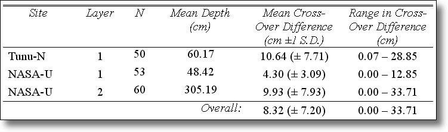
TABLE 2. Validation of stratigraphic layers identified within the GPR data by comparison of depths of these layers at cross-over points within the GPR survey grid. N is the number of identifiable cross-over points included in the measurements. Mean layer depths vary slightly from Table 1 because of the smaller sample size. First of all, cross-over points were selected as points within the survey grid that could be identified as having identical latitude and longitude GPS coordinates; given that the GPS data are non-differential, their accuracy is only on the order of 1-2 m, which means that the cross-over points that are being compared may not always precisely intersect. Secondly, the effective footprint of the GPR transmitter is oriented in a particular direction and will therefore see a slightly different portion of the subsurface when the antenna is aligned differently (e.g. north-south transects vs. east-west transects). The high resolution of these GPR data also make certain sections of the layers difficult to identify due to noise. Lastly, the large number of echoes present in these data can lead to errors in the particular echo being traced in any given transect, although this effect has been minimized as greatly as possible through careful identification of layers during the digitization process.
Figure 16 illustrates the manual snow-pit stratigraphy analyses that were conducted at one corner of each of the Tunu-N and NASA-U survey grids for validation purposes. Table 1 has a snow pit column that can be used to compare the depth of isochronous layers between the GPR data and the manual snow pit estimate. One should note that the Tunu-N layer is incorrectly identified in the snow pit analysis (Figure 16) as belonging to the summer accumulation surface of 2002, whereas the AWS surface-height time series (Figure 15) reveals that this layer actually belongs to the summer of 2001. Compared to the mean depth of the GPR surveys, the snow pit estimate at Tunu-N differs by -16 cm (-24%), whereas the wind crust layer at NASA-U only differs by +4 cm (+8%). Both of these snow pit estimates are within the reported range of the GPR data, which suggests that the same layers are indeed being compared, although the Tunu-N snow pit estimate differs by more than one standard deviation compared to the GPR mean depth. For the second NASA-U layer, no corresponding layer was identified in the NASA-U snow pit analysis for comparison, suggesting that the layer was discontinuous, which was also evident in the GPR data.
In addition to the snow pit comparison, a sonic surface-height measurement has also been employed from the nearby AWS tower at the Tunu-N survey site for another independent point measurement to compare against the GPR survey (Figure 15). Since these measurements have been collected every 10 minutes from 1996 to the present, the time series of surface height can also be used to derive the age of the GPR layer and the time period over which the layer was formed and then subsequently covered by new snow. The depth of the Tunu-N layer as derived from the AWS data agrees well with the mean GPR depth, which disagree by only -1.6 cm (-2.4%).
The AWS data show that the Tunu-N layer is the summer surface for 2001 (Figure 15), last experiencing new snow on around 21 July after which it slowly compacted and was exposed to wind for a relatively lengthy period of ~42 days before new snow arrived and covered it on around 1 September. The shallow 2002 summer surface at a depth of ~26 cm was not identifiable in the GPR data and surely lost in the GPR’s near-field zone. Though we do not have AWS data to compare against NASA-U layer 1, we can see from the snow pit stratigraphy (Figure 16) that there were a series of closely spaced wind crusts occurring near the mean depth of this layer (~50 cm), suggesting that the layer identified in the GPR data was successively covered with new snow events. This can help explain why surface features have better expression and a much more obvious orientation in the kriged Tunu-N surface compared to those interpolated from NASA-U layer 1 (Figure 14). The absence of NASA-U layer 2 in the snow pit stratigraphy and its discontinuity in the GPR data, furthermore, suggest that this layer may be the result of percolation and refreezing from a previous melt event. Such a layer would not have been shaped by wind, therefore, and could also be expected to portray the relatively homogenous spatial patterns shown in Figure 14e.
The purpose of the present study was to determine snow accumulation variability at the local-scale at two sites in the accumulation zone of the Greenland ice sheet. An estimate of this variability was made possible by conducting 100-m by 100-m GPR surveys, which can detect the presence of stratigraphic layers through the electromagnetic contrast of differing snow-crystal grain sizes in the subsurface caused by a variety of factors previously described, most notably the presence of hoar frost that sometimes develops after the onset of warmer temperatures during the summer months. Current maps of accumulation on the Greenland ice sheet (Ohmura and Reeh, 1991; Bales et al., 2001) are compilations of points measurements (e.g. ice cores, manual probes, snow pits). Having an estimate for the spatial variability of snow accumulation can help determine how representative such point measurements are for their respective regions, thereby ultimately characterizing the magnitude of error bars or standard deviations that should be attached to the available accumulation maps.
The results of the current study can begin to address these concerns for at least two widely separated locations on Greenland: Tunu-N and NASA-U. The results suggest that spatial variability in the depth of stratigraphic layers at these two sites—and thereby the surface roughness of these layers—is on the order of ±10 cm (1 S.D.), with a range extending to as much as ±35 cm. Given that Tunu-N has on average about 100-150 mm·yr-1 of snow water equivalent (SWE) (Bales et al., 2001), or about 40 cm of snow in terms of depth, this means that a point estimate of accumulation at Tunu-N for a given year would have an expected error of ±25% but could be off by as much as ±88%. NASA-U, on the other hand, gets about 200-300 mm·yr-1 of SWE on average (Bales et al., 2001), or about 75 cm of snow in terms of depth, which means a point estimate would have about half the expected error of Tunu-N (±13%) and a lower range in error (±47%). Interestingly, the magnitude of these errors agrees well with the estimated error of 20-25% reported for the available accumulation maps (Ohmura and Reeh, 1991; Bales et al., 2001; Cogley, 2004). The current study only surveys two sites, however, and how well these data represent other regions on the Greenland ice sheet can only be investigated through additional GPR surveys in the future.
In comparing the Tunu-N and NASA-U results, it is apparent in the orthogonal visualizations of Figure 14 that the surface features in the Tunu-N layer have a clear orientation (Figure 14a) while those of the NASA-U layers have little-to-no organized spatial pattern (Figure 14c,e). As previously suggested, this could be the result of the relative amount of time that these layers were left uncovered by new snow and exposed to the winds, and the likelihood that NASA-U layer 2 is a discontinuous ice layer formed by percolation and refreezing of melt water. The Tunu-N layer was an exposed surface for ~42 days, allowing the wind to carve features and form dunes into that surface that align perpendicular to the prevailing wind direction as do sand dunes. NASA-U layer 1, on the other hand, may not have been exposed long enough to significantly express these features before they were superimposed by new snow, which can help explain the lack of any obvious orientation or dominant spatial pattern. Because the wind speed was nearly equivalent at both sites at the time of layer formation (~5 m·s-1), the strength of the wind cannot also be used as an argument as to why surface features are better expressed at one site compared to another.
Another possible partial explanation for the homogeneity of the NASA-U layers is the greater difficulty of identifying layers within the NASA-U GPR data compared to Tunu-N. NASA-U layer 1 was at a mean depth of 49.92 ± 7.42 cm, placing it at the edge of the instrument’s near-field zone. Recall from the introduction that the near-field zone of a GPR instrument is a region of high distortion that occurs in the data from the surface down to a depth of ~1.5 times the transmitter frequency, when the radar signal is still in the process of coupling with the subsurface. Since these data were collected at a frequency of 1000 MHz, which corresponds to a wavelength of ~30 cm, this near-field zone extends to a depth of about 45 cm. In short, it was difficult to ascertain the depth of layer 1 along several sectors of the GPR survey grid. In addition, NASA-U layer 2 was deep enough (302.21 ± 11.32 cm) that the signal had become quite faint (recall that radar amplitude decreases exponentially with depth). Even after applying a depth-varying gain filter to the data, layer 2 was also intermittently difficult to digitize because of high levels of noise and discontinuity. For each of these reasons, there is less confidence in the digitized layers at NASA-U and this may partially explain the lack of obvious surface patterns.
The GPR surveys described in the current study were conducted as pilot studies to investigate the feasibility of assessing spatial variability in snow accumulation on the Greenland ice sheet. As previously described, software tools were developed to enable the processing and analysis of these and future GPR data. The results of this study show that it is indeed feasible to measure spatial variability in snow accumulation at the local scale and at relatively shallow depths using high-resolution GPR. However, the greatest strength of these GPR data (high-resolution) can also be interpreted as their greatest weakness (high levels of noise). Even after our best filtering attempts, the remaining presence of noise, prevalence of echoes (at times overlapping echoes from distinct reflection horizons), the near-field distortion zone, and exponential loss of signal with depth all challenge the accurate identification of and absolute depth measurement of stratigraphic layers within the subsurface. Future efforts could likely benefit from more advanced signal processing to help further alleviate some of these problems; use of a broadband, continuous-wave radar such as FMCW would also be worth investigating for comparison against the single-frequency, pulsed radar methodology employed in the present study. Complexity in the subsurface stratigraphy (e.g. discontinuous layers; significant layers from sources other than annual hoar frost such as melt percolation, ice lenses, and/or wind compaction) can also make interpretation of the GPR radargram difficult, and the acquisition of manual snow pit stratigraphy and/or other data such as AWS snow-height and wind data are practically a necessity.
Although similar studies have been conducted with GPR on glaciers in Svalbard and on the Antarctic ice sheet also for the purposes of assessing snow accumulation variability (as described in the introduction), this is the first such study collected on Greenland. Previous studies have also focused mostly on assessing variability over long transects (> 1 km) rather than on acquiring a survey grid that could then be used to generate a three-dimensional surface for assessing local-scale spatial patterns. Most of these previous studies also employ lower antenna frequencies (e.g. 250-500 MHz), which aim at assessing cumulative features at greater depths rather than on identifying individual stratigraphic layers in the shallow subsurface, which requires greater resolution. The message of all of the previous studies as well as the current one, however, is that spatial variability can and often plays an important role in the snow accumulation of glaciers and ice sheets, even where there is apparently flat terrain. Whereas point measurements have been frequently and predominantly employed for assessing accumulation on glaciers and ice sheets and spaceborne methods such as scatterometry are also beginning to be developed for monitoring accumulation (Drinkwater et al., 2001; Nghiem et al., 2005), it is important that we assess how accurately these measurements are representative of wider regions. GPR is a useful tool for accomplishing this, as has been demonstrated by the current study.
~ end ~
Acknowledgements: This research has been funded by NASA (NAG5-10857) as part of the Greenland Climate Network (GC-Net) and the Program for Arctic Regional Climate Assessment (PARCA). The author would like to thank Konrad Steffen and Russell Huff for collecting the GPR data used in this study. The author would also like to express his deepest gratitude to Konrad Steffen for his constant assistance and patience throughout the duration of this project and to Kasey E. Barton for her support and feedback. Thanks also to Ken Knowles for his Software Construction Workshop at the National Snow and Ice Data Center (NSIDC) and for constructive criticism on the programs written for this project, and to Ted Scambos for relating his GPR experiences from Antarctica.
- Abdalati, W. and K. Steffen (2001), Greenland ice sheet melt extent: 1979-1999. Journal of Geophysical Research. 106(D24): 33983-33989.
- Albert, M., G. Koh, and F. Perron (1999), Radar investigations of melt pathways in a natural snowpack. Hydrological Processes. 13(18): 2991-3000.
- Arcone, S.A. (1996), High resolution of glacial ice stratigraphy: A ground-penetrating radar study of Pegasus Runway, McMurdo Station, Antarctica. Geophysics. 61(6): 1653-1663.
- Bales, R.C., J.R. McConnell, E. Mosley-Thompson, and B. Csatho (2001), Accumulation over the Greenland ice sheet from historical and recent records. Journal of Geophysical Research. 106(D24): 33,813-33,826.
- Cogley, J.G. (2004), Greenland accumulation: An error model. Journal of Geophysical Research. 109, D18101, doi:10.1029/2003JD004449.
- Conyers, L. B. and D. Goodman (1997), Ground-Penetrating Radar: an Introduction for Archeologists. Walnut Creek, CA: AltaMira Press. 232 pp.
- Cuffey, K.M. and S.J. Marshall (2000), Substantial contribution to sea-level rise during the last interglacial from the Greenland ice sheet. Nature. 404: 591-594.
- Delaney, A.J., S.A. Arcone, and J.H. Rand (1999), Radar investigations of proposed utilidor sites at South Pole Station. CRREL Special Report 99-10. 7 pp.
- Delaney, A.J. and S.A. Arcone (1995), Detection of crevasses near McMurdo Station, Antarctica with airborne short-pulse radar. CRREL Special Report 95-7. 12 pp.
- Drinkwater, M.R., D.G. Long, and A.W. Bingham (2001), Greenland snow accumulation estimates from satellite radar scatterometer data. Journal of Geophysical Research. 106(D24): 33,935-33,950.
- Eisen, O., U. Nixdorf, L. Keck, and D. Wagenbach (2003a), Alpine ice cores and ground penetrating radar: combined investigations for glaciological and climatic interpretations of a cold Alpine ice body. Tellus. 55B(5): 1,007-1,017.
- Eisen, O., F. Wilhelms, U. Nixdorf, and H. Miller (2003b), Identifying isochrones in GPR profiles from DEP-based forward modeling. Annals of Glaciology. 37: 344-350.
- Engeset, R.V. and R.S. Ødegård (1999), Comparison of annual changes in winter ERS-1 SAR images and glacier mass balance of Slakbreen, Svalbard. International Journal of Remote Sensing. 20(2): 259-271.
- Frezzotti, M., M. Pourchet, O. Flora, S. Gandolfi, M. Gay, S. Urbini, C. Vincent, S. Becagli, R. Gragnani, M. Proposito, M. Severi, R. Traversi, R. Udisti, and M. Fily (2004), New estimations of precipitation and surface sublimation in East Antarctica from snow accumulation measurements. Climate Dynamics. 23: 803-813.
- Gruber, S. and F. Ludwig (1996), Application of ground penetrating radar in glaciology and permafrost prospecting. http://www.ulapland.fi/home/hkunta/jmoore/gpr_cryo.pdf.
- Hanna, E., P. Huybrechts, I. Janssens, J. Cappelen, K. Steffen, and A. Stephens (2005), Runoff and mass balance of the Greenland ice sheet: 1958-2003. Journal of Geophysical Research. 110, D13108, doi:10.1029/2004JD005641.
- Judge, A.S., C.M. Tucker, J.A. Pilon and B.J. Moorman (1991), Remote sensing of permafrost by ground-penetrating radar at two airports in Arctic Canada. Arctic. 44, Supplement 1: 40-48.
- Kanagaratnam, P., S. P. Gogineni, V. Ramasami, and D. Braaten (2004), A wideband radar for high-resolution mapping of near-surface internal layers in glacial ice. IEEE Transactions on Geoscience and Remote Sensing. 42(3): 483-490.
- King, J.C., P.S. Anderson, D.G. Vaughan, G.W. Mann, S.D. Mobbs, and S.B. Vosper (2004), Wind-borne redistribution of snow across an Antarctic ice rise. Journal of Geophysical Research. 109, D11104, doi:10.1029/2003JD004361.
- Marchand, W.-D. and A. Killingtveit (2005), Statistical probability distribution of snow depth at the model sub-grid cell spatial scale. Hydrological Processes. 19: 355-369.
- Marchand, W.-D., O. Bruland, and A. Killingtveit (2001), Improved measurements and analysis of spatial snow cover by combining a ground based radar system with a differential global positioning system receiver. Nordic Hydrology. 32(3): 181-194.
- Mätzler, C. (1996), Microwave permittivity of dry snow. IEEE Transactions on Geoscience and Remote Sensing. 34(2): 573-581.
- Mosley-Thompson, E., J.R. McConnell, R.C. Bales, P.-N. Lin, K. Steffen, L.G. Thompson, R.Edwards, and D. Bathke (2001), Local to regional-scale variability of annual net accumulation on the Greenland ice sheet from PARCA cores. Journal of Geophysical Research. 106(D24): 33,839-33,851.
- Nghiem, S.V., K. Steffen, G. Neumann, and R. Huff (2005), Mapping of ice layer extent and snow accumulation in the percolation zone of the Greenland ice sheet. Journal of Geophysical Research. 110, F02017, doi:10.1029/2004JF000234.
- Nicholls, R.J. (2002), Rising sea levels: potential impacts and responses. Issues in Environmental Science and Technology. 17: 83-107.
- Ohmura, A. and N. Reeh (1991), New precipitation and accumulation maps for Greenland. Journal of Glaciology. 37(125): 140-148.
- Østrem, G. and M. Bruggman (1991), Glacier mass-balance measurements: a manual for field and office work. Environment Canada, National Hydrology Research Institute, and Norwegian Water Resources and Energy Admin. Science Rep. 4. 224 pp.
- Pälli, A., J.C. Moore, and C. Rolstad (2003), Firn-ice transition-zone features of four polythermal glaciers in Svalbard seen by ground-penetrating radar. Annals of Glaciology. 37: 298-304.
- Pälli, A., J.C. Kohler, E. Isaksson, J.C. Moore, J.F. Pinglot, V.A.Pohjola, and H. Samuelsson (2002), Spatial and temporal variability of snow accumulation using ground-penetrating radar and ice cores on a Svalbard glacier. Journal of Glaciology. 48(162): 417-424.
- Pettersson, R. and P. Jansson (2004), Spatial variability in water content at the cold-temperate transition surface of the polythermal Storglaciären, Sweden. Journal of Geophysical Research. 109, F02009, doi:10.1029/2003JF000110.
- Pinglot, J.F., J.O. Hagen, K. Melvold, T. Eiken, and C. Vincent (2001), A mean net accumulation pattern derived from radioactive layers and radar soundings on Austfonna, Nordaustlandet, Svalbard. Journal of Glaciology. 47(159): 555-566.
- Plewes, L.A. and B. Hubbard (2001), A review of the use of radio-echo sounding in glaciology. Progress in Physical Geography. 25(2): 203-236.
- Richardson, C. and P. Holmlund (1999), Spatial variability at shallow snow-layer depths in central Dronning Maud Land, East Antarctica. Annals of Glaciology. 29: 10-16.
- Richardson, C., E. Aarholt, S.-E. Hamran, P. Holmlund, and E. Isaksson (1997), Spatial distribution of snow in western Dronning Maud Land, East Antarctica, mapped by a ground-based snow radar. Journal of Geophysical Research. 102(B9): 20,343-20,353.
- Sand, K., J.-G. Winther, D. Maréchal, O. Bruland, and K. Melvold (2003), Regional variations of snow accumulation on Spitsbergen, Svalbard, 1997-99. Nordic Hydrology. 34(1/2): 17-32.
- Schwartz, P. and D. Randall (2003), An abrupt climate change scenario and its implications for United States national security. Report prepared by Global Business Network (GBN) for the U.S. Department of Defense. http://www.gbn.org/ArticleDisplayServlet.srv?aid=26231.
- Siegert, M.J. (1999), On the origin, nature and uses of Antarctic ice-sheet radio-echo layering. Progress in Physical Geography. 23(2): 159-179.
- Small, C. and R.J. Nicholls (2003), A global analysis of human settlement in coastal zones. Journal of Coastal Research. 19(3): 584-599.
- Steffen, K., J.E. Box, and W. Abdalati (1996), “Greenland Climate Network: GC-Net”, in Colbeck, S.C. Ed. CRREL 96-27 Special Report on Glaciers, Ice Sheets and Volcanoes, trib. to M. Meier: 98-103.
- Steffen, K. and J.E. Box (2001), Surface climatology of the Greenland ice sheet: Greenland climate network 1995-1999. Journal of Geophysical Research. 106(D24): 33,951-33,964.
- Steffen, K. and R. Huff (2003), Greenland maximum melt extent. http://cires.colorado.edu/steffen/melt. Accessed on 13 February 2006.
- Thompson, S.L. and D. Pollard (1997), Greenland and Antarctic mass balances for present and doubled atmospheric C02 from the GENESIS version-2 global climate model. Journal of Climate. 10: 871-900.
- van der Veen, C.J., D.H. Bromwich, B.M. Csatho, and C. Kim (2001), Trend surface analysis of Greenland accumulation. Journal of Geophysical Research. 106(D24): 33,909-33,918.
- Vaughan, D.G., H.F.J. Corr, C.S.M. Doake, and E.D. Waddington (1999), Distortion of isochronous layers in ice revealed by ground-penetrating radar. Nature. 398: 323-326.
- Walford, M.E.R. (1964), Radio-echo sounding through an ice shelf. Nature. 204: 317-319.
- Welch, B.C., W.T. Pfeffer, J.T. Harper and N.F. Humphrey (1998), Mapping subglacial surfaces of temperate valley glaciers by two-pass migration of radio-echo sounding survey data. Journal of Glaciology. 44: 164-170.
- Wild, M. and A. Ohmura (2000), Changes in mass balance of the polar ice sheets and sea level under greenhouse warming as projected in high resolution GCM simulations. Annals of Glaciology. 30: 197-203.
- Winebrenner, D.P., B.E. Smith, G.A. Catania, H.B. Conway, and C.F. Raymond (2003), Radio-frequency attenuation between Siple Dome, West Antarctica, from wide-angle and profiling radar observations. Annals of Glaciology. 37: 226-232.
- Winther, J.-G., O. Bruland, K. Sand, Å. Killingtveit, and D. Marechal (1998), Snow accumulation distribution on Spitsbergen, Svalbard, in 1997. Polar Research. 17(2): 155-164.
- Wu T., S. Li, G. Cheng and Z. Nan (2005), Using ground-penetrating radar to detect permafrost degradation in the northern limit of permafrost on the Tibetan Plateau. Cold Regions Science and Technology. 41: 211-219.
- Zwally, H.J. (1989), Growth of Greenland Ice Sheet: interpretation. Science. 246: 1,589-1,591.
- Zwally, H.J., W. Abdalati, T. Herring, K. Larson, J. Saba, and K. Steffen (2002), Surface melt-induced acceleration of Greenland ice-sheet flow. Science. 297: 218-222.
Appendix A. DATA PROCESSING INSTRUCTIONS
Appendix B. PROGRAM DOCUMENTATION AND INSTALLATION INSTRUCTIONS
Top of page • Introduction • Methods • Results • Discussion • References
Appendix A. Data Processing Instructions • Appendix B. Program Documentation and Installation Instructions© 2006, {% include footer.ssi %}